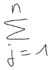

Overview
Math Widget is an interactive input method, enabling users to smoothly handwrite mathematical operations and equations, which can then be typeset and solved. Based on MyScript Math SDK, it displays its features in a user-friendly interface.
Math Widget is designed to ensure a natural, handwriting-based HMI with real-time recognition and ink editing gestures. It also offers all the calculation features of a common scientific calculator, including exponential and trigonometric functions.
Use cases
MyScript Calculator
MyScript Calculator is an handwriting calculator based on MyScript Math. In this scenario, the user handwrites mathematical operations and equations. Handwritten input is converted into a digital text formula. The widget can also solve simple arithmetic and trigonometric formulas, returning a calculated result. The content of the displays can be exported as an image or as a MathML or LaTeX string.
MyScript MathPad
MyScript MathPad is a handwriting LaTeX generator based on MyScript Math. It allows you to handwrite your equations and mathematical expressions and convert them for easy sharing.
Features
Real-time recognition of symbols and rules
Real-time recognition of mathematical rules and more than 200 mathematical symbols and characters.
Typeset rendering
Captured handwritten equations can be rendered to typeset equations in real-time. Rendering can be customized (font, color, background, etc.).
Editing gestures
Correction (strikethrough, scratch-out) can be applied on both original handwritten text and typeset text. They can also be deactivated if needed. Undo/redo features are supported.
LaTeX, MathML, image and text results
Results are available as LaTeX, MathML, image and text.
Solver activation
Entered equations can be solved and question marks are supported as unknown variables. Rounding and truncation options are available.
Save and restore
Save and restore your equation in MyScript Math format.
Supported symbols
See below a non-exhaustive list of supported symbols.
It is also possible to create a custom grammar resource, by constraining the recognition for particular use cases (integral calculus, vector calculus, finite element calculus, etc.). For more information, see the Developer tools page.
| Type of item  | Items |
|---|---|
| Letters (Latin alphabet) | a b c d e f g h i j k l m n o p q r s t u v w x y z A B C D E F G H I J K L M N O P Q R S T U V W X Y Z |
| Digits | 0 1 2 3 4 5 6 7 8 9 |
| Mathematical symbols (including operators) | ¬†‚Ǩ $ ¬£ ¬• ‚Ç© ¬¢ ( ) < > [ ] { }¬† ! # % & ? @ / \ | ‚à• ¬© ‚àÇ‚àÖ ‚àá ‚àû ‚ÑÇ ‚Ñï ‚Ñö ‚Ñù ‚ѧ + - ¬± √ó √∑ * ‚àò ¬∑ = ‚Äò , . ¬†: ; _ ‚Üê ‚Üë ‚Üí ‚Üì ‚Üî ‚Üï ‚Üñ ‚Üó ‚Üò ‚Üô‚áê ‚áë ‚áí ‚áì ‚áî ‚áï ‚àÄ ‚àÉ ‚àÑ ‚àà ‚àâ ‚àã ‚àå ‚à™ ‚à© ‚äÇ ‚äÉ ‚äÑ ‚äÖ ‚ຠ‚âÉ ‚âà ‚â† ‚â° ‚⢠‚⧠‚â• ‚â™ ‚â´ ‚àù ‚à† ‚àè ‚àë ‚à´ ‚à´‚à´ ‚à´‚à´‚à´ ‚àÆ ‚àØ ‚à∞ ‚àß √l ‚äï ‚äó ‚äñ ‚äô ¬¨Œ®‚Ñë‚Ñú‚Ñì‚ܺ‚áÄ‚ÜΩ‚áÅ‚áã‚áå‚àê‚ංâÑ‚âÖ‚âÜ‚âá‚ââ‚âÆ‚âØ‚â∞‚ⱂãâ‚ãä‚ãÆ‚åà‚åâ ‚åä‚åã‚ñ° ‚ñ≥ ‚ü¶ ‚üß ‚¶û ùîª ‚´ª |
| Greek symbols frequently used in mathematics | Γ Δ Ω α β γ δ ε η θ λ ν π ρ σ τ φ χ ψ ω ϕ µ |
| Mathematical terms | sin cos tan sinh cosh tanh arcsin arccos arctan cot coth min max arg argmin argmax inf sup lim liminf limsup ln log dx dy dz dt |
| International convention units (weight, length, frequency, luminosity, dosage, pressure, etc.) | km hm dam dm cm mm µm ha hl dal dl cl ml µl kg hg dag dg cg mg µg ms µs GHz MHz kHz Hz |
Supported rules
Each grammar sets out a number of production rules for equations, namely:
| Type of rule | Written example | Recognition |
|---|---|---|
| Horizontal pair | ||
| Fence | ||
| Square root |  |
|
| Fraction |  |
|
| Subscript | ||
| Superscript | ||
| Subsuperscript | ||
| Presuperscript | ||
| Overscript |
||
| Underscript | ||
| Underoverscript |  |
Supported operations
The solver is activated only if the equation contains numbers and/or fractions and at least one of the following operators:

Input and output formats
It is possible to reload a result, using a symbol list or some binary data previously generated.
Math Widget also offers the possibility to export results in 5 different formats:
- Math Widget symbol list
- Binary data
- Image
-
LaTeX
\dfrac {-b\pm \sqrt {b^{2}-4ac}}{2a} - MathML
<math xmlns='http://www.w3.org/1998/Math/MathML'>
<mfrac>
<mrow>
<mo> - </mo>
<mi> b </mi>
<mo> ± <!-- plus-minus sign --> </mo>
<msqrt>
<msup>
<mrow>
<mi> b </mi>
</mrow>
<mrow>
<mn> 2 </mn>
</mrow>
</msup>
<mo> - </mo>
<mn> 4 </mn>
<mi> a </mi>
<mi> c </mi>
</msqrt>
</mrow>
<mrow>
<mn> 2 </mn>
<mi> a </mi>
</mrow>
</mfrac>
</math>Display modes
No beautification
Characters stay handwritten until solving is activated manually, if needed. Text is then typeset and solved at the same time.

Typeset
Characters are automatically typeset after a short delay, using standard math fonts or custom fonts. If needed, solving has to be activated manually.
Typeset and solve
Characters are typeset after a short delay, using standard math fonts or custom fonts. The whole operation is solved, provided that its characters are supported by the solver (see above).
Integration
Step 1 - Download your Certificate
- Download the certificate from the Support website.
- Paste it in your project and start creating your app.
Step 2 - Configure your Dependencies
- In the
build.gradlefile of your project, add:
repositories {
flatDir {
// Location of your package's `libs` directory containing `*.aar` files.
dirs 'path/to/libs'
}
}- In the
dependenciessection, add:
compile 'com.android.support:appcompat-v7:23.+'
compile(name: 'MyScript_ATK-Core-android-component', ext: 'aar')
compile(name: 'MyScript_ATK-Math-android-component', ext: 'aar')
compile(name: 'MyScript_ATK-MathWidget-android-widget', ext: 'aar')Step 3 - Add Resources
Copy the assets directory from samples/MathWidgetSample/src/main into your project. It contains the following files:
-
resources/math/math-ak.res, -
resources/math/math-grm-atk.res, -
conf/math.conf.
Step 4 - Add a Layout Resource
To integrate the Math Widget view, add the following snippet in your layout.
<com.myscript.atk.math.widget.MathWidget
android:id="@+id/math_widget"
android:layout_width="fill_parent"
android:layout_height="fill_parent"
/>Step 5 - Start with Minimal Integration Code
Edit the MainActivity class:
public class MainActivity extends AppCompatActivity implements
MathWidgetApi.OnConfigureListener,
MathWidgetApi.OnRecognitionListener
{
private static final String TAG = "MathDemo";
private MathWidgetApi widget;
@Override
protected void onCreate(Bundle savedInstanceState)
{
super.onCreate(savedInstanceState);
setContentView(R.layout.activity_main);
widget = (MathWidgetApi) findViewById(R.id.math_widget);
if (!widget.registerCertificate(MyCertificate.getBytes()))
{
AlertDialog.Builder dlgAlert = new AlertDialog.Builder(this);
dlgAlert.setMessage("Please use a valid certificate.");
dlgAlert.setTitle("Invalid certificate");
dlgAlert.setCancelable(false);
dlgAlert.setPositiveButton("OK", new DialogInterface.OnClickListener()
{
public void onClick(DialogInterface dialog, int which)
{
//dismiss the dialog
}
});
dlgAlert.create().show();
return;
}
// Listen to widget events (see onConfigureEnd and onRecognitionEnd APIs)
widget.setOnConfigureListener(this);
widget.setOnRecognitionListener(this);
// references assets directly from the APK to avoid extraction in application
// file system
widget.addSearchDir("zip://" + getPackageCodePath() + "!/assets/conf");
// The configuration is an asynchronous operation. Callbacks are provided to
// monitor the beginning and end of the configuration process and update the UI
// of the input method accordingly.
//
// "math" references the conf/math/math.conf file in your assets.
// "standard" references the configuration name in math.conf
widget.configure("math", "standard");
}
@Override
protected void onDestroy()
{
widget.setOnRecognitionListener(null);
widget.setOnConfigureListener(null);
// release widget's resources
widget.release();
super.onDestroy();
}
@Override
public void onConfigureBegin(MathWidgetApi widget)
{
}
@Override
public void onConfigureEnd(MathWidgetApi widget, boolean success)
{
if(!success)
{
Toast.makeText(getApplicationContext(), widget.getErrorString(), Toast.LENGTH_LONG).show();
Log.e(TAG, "Unable to configure the Math Widget: " + widget.getErrorString());
return;
}
Toast.makeText(getApplicationContext(), "Math Widget Configured", Toast.LENGTH_SHORT).show();
if(BuildConfig.DEBUG)
Log.d(TAG, "Math Widget configured!");
}
@Override
public void onRecognitionBegin(MathWidgetApi widget)
{
}
@Override
public void onRecognitionEnd(MathWidgetApi widget)
{
Toast.makeText(getApplicationContext(), "Recognition update", Toast.LENGTH_SHORT).show();
if(BuildConfig.DEBUG)
{
Log.d(TAG, "Math Widget recognition: " + widget.getResultAsText());
}
}
}API
See the API documentation for Android.